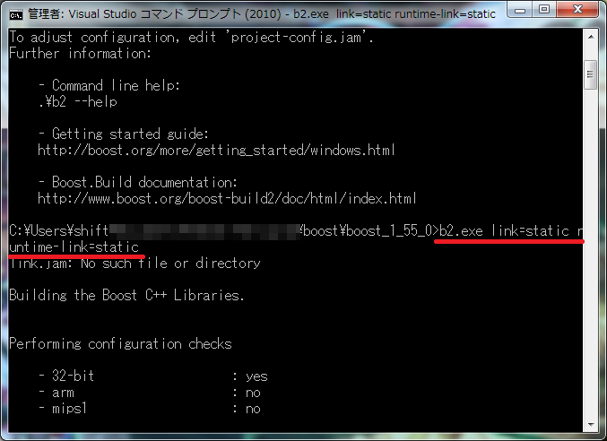

boost
の薦め（導入編）
・
boost
の概要
boost
とはC++の機能を拡張するライブラリの一種です。
この
ProgramingTechnic
の別な項では
DXライブラリ
などを引き合いに出して来ました。
DXライブラリが描画系統を司るDirectXの機能をラップする拡張ライブラリであることに対して、
boost
ライブラリはC++で行われる汎用処理の拡張を担います。
boost
ライブラリを制作しているコミュニティには、C++標準化委員会(言語としてのC++そのものの仕様を定める委員会)に所属しているメンバーも列なっており、
その意味で
boost
ライブラリは"準標準"なライブラリとして有名です。
ちなみに"標準"ライブラリはSTL(Standard Template Library)です。
素のC++では簡単に実装できない機能群が（主にテンプレートを用いて）非常に美しく記述され、実装されています。
ここではその
boost
ライブラリの導入といくつかの機能を紹介します。
・
boost
の導入
とにもかくにも導入して使ってみましょう。何ごとも始めが肝心です。
では「
boost
インストール」でググって適当なところから・・・ではあまりに無責任なのでルートの一つを示しておきます（＾＾；
手動でビルドまでを解説しますので「そんなのめんどくせえ！」って人はGUIのインストーラーがあるらしいので探してインストールしてください。（丸投げ）
まず
boost
の日本語コミュニティ
boostjp
から「
boost
ライブラリのビルド方法」のページを開きます。
そこから本家
boost
のダウンロードページへ飛びます。
2014/02/17現時点では最新バージョンは1.55.0でしたがまあそれっぽいものをダウンロードしてください。
以下は1.55.0で進めます。
ジャンプするとどのファイルをダウンロードするのか聞かれますので、
特に拘りがなければ.zipをダウンロードしましょう。
割と大きいため回線によっては結構時間がかかるかもしれないので緑茶でも飲みながらお待ちください。
ダウンロードしたzipは以下のようなディレクトリ構成をしています。
一部の機能を除いては./boost_1_55_0/boostへパスを通すだけで使えます。
ライブラリを必要とする大きめの機能を使用可能にするためには環境に合ったライブラリをビルドする必要があります。
そのためにはまずboost_1_55_0フォルダ直下にある「bootstrap.bat」を実行します。
この時、エクスプローラーから実行してもいいですが以降の作業はビルド環境つきのコマンドラインから行うため、
VC++のコマンドラインからcd "boost_1_55_0解凍先フォルダパス"でコマンドライン上で作業することをおすすめします。
(他のC++環境についてはｽｲﾏｾﾝ（＾＾； )
「bootstrap.bat」を実行すると同階層に「b2.exe」と「bjam.exe」の二つの実行ファイルが生成されます。
この二つのファイルは同じ実行ファイルらしいのですが
とりあえず公式でもコマンドライン上でも「b2.exe」の使用を推奨しているようですので「b2.exe」を使います。
単純に「b2.exe」を実行するとデフォルトの設定でビルドが開始されますが、
「b2.exe」は様々なパラメータを受け取ってのビルドが可能です。
もし導入の最後までやってコンパイルエラーが発生するようでしたらここのビルドを疑った方が良いです。
パラメータの詳しい説明は他のサイト参照ですが自分の環境では
「b2.exe link=static runtime-link=static」でうまく静的リンクのスタティックリンクライブラリ(.lib)がビルドできました。
動的ライブラリ(.dll)が欲しいとコンパイラに言われた場合はstaticをsharedに変えてビルドしなおすと良いようです。

↑実行時にパラメータを渡す ビルドの様子（一部）↓
かなり時間とCPUパワーを食いますのでコーヒーでも飲みながらお待ちください。
・
・
・
終わりました
ライブラリファイルは特に指定しなければ./boost_1_55_0/boost/stage/lib内にビルドされます。
このフォルダと、ヘッダファイル(.hpp)がある./boost_1_55_0/boostへVC++側でパスを通しておきます。
パスの通しかたも一応解説。Microsoft Visual Studio 2010ですが他のバージョンでもVC++ならほぼ同じです。
まず適当なプロジェクトを作成し、①プロパティマネージャーからDebug|Win32/Microsoft.Cpp.Win32.user的なものを②右クリックして③プロパティを開きます。
プロパティから「VC++ディレクトリ」を選択し、インクルードディレクトリとライブラリディレクトリを編集して上で示したパスを追加するだけです。
念のためフルパスで指定しておくと良いでしょう。（フォルダ構成と好みによります）
画像はインクルードディレクトリですがライブラリディレクトリにも同様に./boost_1_55_0/boost/stage/libを追加しておきましょう。
これでうまくパスが通っていればソースコード上で
boost
の機能を使うことができます。
どんな機能があるかは次ページ以降でその一部を紹介しますのでこのページは一端区切ります。
うまく導入できた方は次のページへ、ちょっとうまくいかなかった方はビルド、パスの通し方と
以下の「エラーが起こった時は」を見直して参考サイト様を見てみましょう。
->
boost
の薦め（紹介編）
へ
エラーが起こった時は
・#include <boost/○○.hpp>したのにファイルが見つからない
十中八九パスが通ってません。
.hppファイルがあるフォルダにパスを通しましょう。
DebugやReleaseモードで異なる設定をしていませんか？
上の解説ではDebugモードのみでしたがReleaseモードでビルドする場合はそちらのプロパティにもディレクトリを追加する必要があります。
・リンカエラーLNK1104 ファイル 'libboost_
<name>
-vc100-
<option>
-
<version>
.lib' を開くことができません。
ヘッダーのみで完結している機能は使えるがライブラリがうまくリンクできていない場合に出ます。
name
にはライブラリを必要とする機能の名前。
version
には
boost
ライブラリのバージョン。
option
にはリンク形式とランタイム形式を示す以下の文字列
option
説明
option
説明
mt
マルチスレッド
s
シングルスレッド
mt-gd
マルチスレッドデバッグ
s-gd
シングルスレッドデバッグ
mt-s
マルチスレッド、スタティックCランタイム
s-s
シングルスレッド、スタティックCランタイム
mt-sgd
マルチスレッドデバッグ、スタティックCランタイム
s-sgd
シングルスレッドデバッグ、スタティックCランタイム
が入ります。
おそらくoptionが異なるビルドをしたためコンパイラが欲しいライブラリが存在しない、とみなされているのでしょう。
VC++側からプロパティ->C/C++->コード生成で(マルチ/シングル)スレッド(/デバッグ)のモードを確認し、
再度適切なパラメータを渡してb2.exeによるビルドを行ってください。
最悪全通りビルドすればどれかは通ります（＾＾
ライブラリビルド時のパラメータについては参考サイト様を参照してください。
・表示できない文字がある、Unicodeで保存うんぬん・・・という警告
日本語環境では
boost
のソースが書かれている文字コードに対応しきれず、警告を出す事があります。
警告なので無視してもコンパイルは通るのですがそれでも邪魔くさい。
そんなときは面倒でもいちいち開いて日本語コード(Shift-jisなど)で(名前をつけて保存->上書き)保存しなおすと収まります。
複数ファイルの文字コードを一括で変換するフリーソフトもあるようなのでそちらの使用も検討してみてはどうでしょう。
フリーソフトを使わなくてもコマンドプロンプトのforとchcp.comで文字コードを一括変換できるようですが、
未確認ですのでよく調べてから自己責任でお願いします。
（自分は警告出るファイルだけ保存しなおしました。）
->
boost
の薦め（紹介編）
へ
・参考サイト様
Let's Boost
Boost のインストール方法
言わずと知れた
boost
の解説サイト様。
ここ一つでかなりの範囲を網羅しております。
C++ - Boost C++ライブラリ
Boost C++ライブラリ
bjam.exeによるライブラリビルド時のパラメータはここを参照しました。
bjam.exeとb2.exeは現バージョンの
boost
では同じものですので、同じパラメータがそのまま使えます。
予定外 Windows環境へのBoostライブラリインストール
Windows環境へのBoostライブラリインストール
同じくパラメータについてと全体の流れを解説しています。
Windows Script Programming
cmd.exeとchcp.comだけで、文字コードを変換する！
最後の警告についての文字コードはこちらを見るといいんじゃないでしょうか。未確認ですが。
『Boost C++ Libraries プログラミング 第２版』
稲葉 一浩 著
ISBN 978-4-7980-1704-4 C3055
こちらは書籍です。
各機能のリファレンスも網羅しております。
現在では絶版になってしまっているようですが・・・